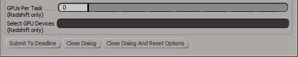
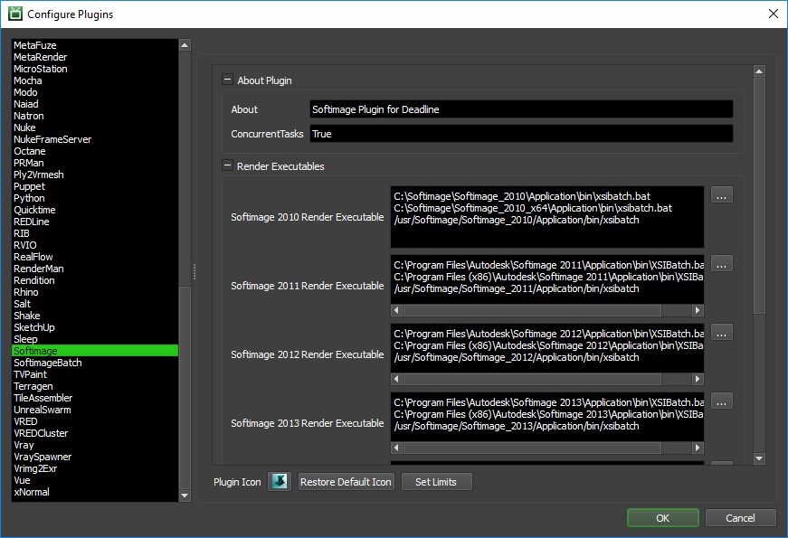
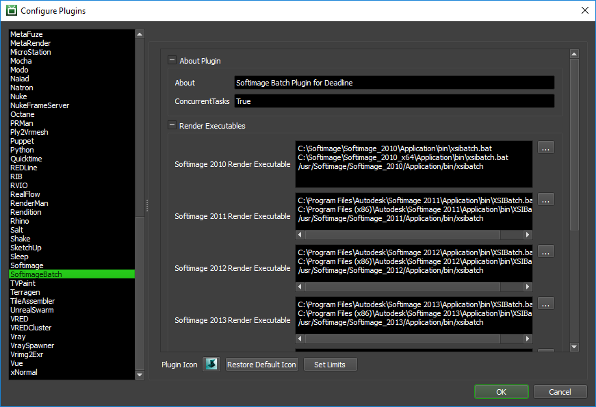

Softimage¶
Job Submission¶
You can submit jobs from within Softimage by installing the integrated submission script, or you can submit them from the Monitor. The instructions for installing the integrated submission script can be found further down this page.

To submit from within Softimage, select the Render toolbar on the left and click Render -> Submit To Deadline.

Submission Options¶
The general Deadline options are explained in the Job Submission documentation, and the Draft/Integration options are explained in the Draft and Integration documentation. The Softimage specific options are:
Frame List: The frame range to render for the scene.
Ignore Per Pass Frame List (Use Frame List): If enabled, when rendering passes, each pass will render using the main Frame List range, instead of it’s own pass frame range.
Group Size: The number of frames per individual task when submitted to Deadline. Group Size=10, would mean 10 frames to be rendered per task in Deadline queue.
Workgroup: Specify the workgroup that Softimage should use during rendering. Leave blank to ignore.
Force Build: Force 32 bit or 64 bit rendering.
Submit Softimage Scene File: The Softimage scene file will be submitted with the job. If your Softimage scene is stored in a project folder on the network, it is recommended that you leave this box unchecked.
Threads: The number of render threads to use during rendering.
Use Softimage Batch Plugin: This plugin keeps Softimage and the scene loaded in memory between tasks.
Enable Local Rendering: If enabled, the frames will be rendered locally, and then will be copied to the final network location. Note that this feature doesn’t support the “Skip Existing Frame” option.
Skip Batch Licensing Check: If enabled, Softimage won’t try to check out a Batch license during rendering. This allows you to use 3rd party renderers like V-Ray or Arnold without using a Softimage batch license.
Selecting passes to render:
Select which passes you would like to render. A separate job is submitted for each pass. If no passes are selected, then the current pass is submitted. Note that if you are using FxTree Rendering, the passes are ignored.

Setting up a tile rendering job:
Enable tile rendering to split up a frame into multiple tiles that are rendered individually. By default, a separate job is submitted for each tile (this allows for tile rendering of a sequence of frames). For easier management of single frame tile rendering, you can choose to submit all the tiles as a single job.
You can submit a dependent assembly job to assemble the image when the main tile job completes. Otherwise, the output formats that are supported are BMP, DDS, EXR, JPG, JPE, JPEG, PNG, RGB, RGBA, SGI, TGA, TIF, and TIFF.
Note that the Error On Missing Tiles option only applies to Draft assemblies.
Note that if you are using FxTree Rendering, the tile rendering settings are ignored.

Setting up an FxTree rendering job:
Enable FxTree rendering to render a specific FxTree output node, which can be selected from the FxTree Output dropdown box. You can also set the frame offset for the output files. Some things to note are:
The frame range to be rendered is pulled from the Frame List setting under the Submission Options tab.
If you are rendering to a movie file, be sure to set the Group Size to the number of frames in your animation.

Notes:
Softimage gives the option to specify file paths as being relative to the current directory or absolute. Deadline requires that all file paths be absolute.
When specifying the image output, make sure to include the extension (.pic, .tga, etc) at the end so that you can view the individual rendered images from the task list in the Monitor.
Pipeline Tools¶
When using the integrated submitter to submit through Softimage you have the ability to use any of the event plugins that you have enabled through the Deadline Monitor. This is done by opening the Pipeline Tools window via the Pipeline Tools button. This window is explained further in the Pipeline Tools documentation.
Redshift Renderer Options¶
If submitting a Softimage scene that uses the Redshift renderer, there will be a couple of additional options in the integrated submitter.
GPUs Per Task: If set to 0 (the default), then Redshift will be responsible to automatically choose the GPUs to use for rendering.
If this is set to 1 or greater, then each task for the job will be assigned specific GPUs. This can be used in combination with concurrent tasks to get a distribution over the GPUs. For example:
if this is set to 1, then tasks rendered by the Workers thread 0 would use GPU 0, thread 1 would use GPU 1, etc.
if this is set to 2, then tasks rendered by the Workers thread 0 would use GPUs {0,1}, thread 1 would use GPUs {2,3}, etc.
Select GPU Devices: A comma separated list of specific GPU device Id(s) can be entered instead of using the above ‘GPUs Per Task’ option (which must be set to “0”). Valid examples include: “0” or “1” or “0,1” or “2,4” without the quotation marks.
Cross-Platform Rendering Considerations¶
In order to perform cross-platform rendering with Softimage, you must setup Mapped Paths so that Deadline can swap out file paths where appropriate. You can access the Mapped Paths Setup in the Monitor while in power user mode by selecting Tools -> Configure Repository. You’ll find the Mapped Paths Setup in the list on the left.
Plugin Configuration¶
You can configure the Softimage and SoftimageBatch plugin settings from the Monitor. While in power user mode, select Tools -> Plugins Configuration and select the Softimage or SoftimageBatch plugin from the list on the left.
Softimage¶
Render Executables
Softimage Render Executable: The path to the XSIBatch.bat file used for rendering. Enter alternative paths on separate lines. Different executable paths can be configured for each version installed on your render nodes.
Options
Enable Strict Error Checking: If enabled, Deadline will fail in almost all cases when the job whenever Softimage prints out ‘ERROR’ for whatever reason.
Return Codes To Ignore: Error codes (other than 0) that Deadline should ignore and instead assume the render has finished successfully. Use a ; to separate the error codes.
SoftimageBatch¶
Render Executables
Softimage Render Executable: The path to the XSIBatch.bat file used for rendering. Enter alternative paths on separate lines. Different executable paths can be configured for each version installed on your render nodes.
Options
Enable Strict Error Checking: If enabled, Deadline will fail in almost all cases when the job whenever Softimage prints out ‘ERROR’ for whatever reason.
Connection Timeout: The amount of seconds to give the Deadline plugin and Softimage to establish a connection before the job fails.
Timeout For Progress Updates: The amount of seconds to between Softimage progress updates before the job is failed. Set to 0 to disable this feature.
Integrated Submission Script Setup¶
The following procedures describe how to install the integrated Softimage submission script. This script allows for submitting Softimage render jobs to Deadline directly from within the Softimage editing GUI.
Earlier versions of Softimage might not ship with Python out of the box. In this case, follow these steps:
Install the Python engine for Softimage. For more information, see the Softimage Python installation documentation.
Check that the Python engine has been installed correctly. This can be done by opening up Softimage and selecting File -> Preferences. Under the Scripting preferences, you should have the option to select Python as the Script Language. If you don’t see this option, then Python has not been installed correctly, and you should contact the Softimage support team.

Once Python is an available scripting option in Softimage, you can follow these steps to install the submission script:
You can either run the Submitter installer or manually install the submission script.
Submitter Installer¶
Run the Submitter Installer located at
<Repository>/submission/Softimage/Installers.
Manual Installation¶
Copy the file:
[Repository]/submission/Softimage/Client/DeadlineSoftimageClient.py to the folder [Softimage Install Directory]/Application/Plugins
Verify Installation¶
Launch Softimage. The submission script is automatically installed when Softimage starts up. To make sure the script was installed correctly, select the Render toolbar on the left and click the Render button. A Submit Softimage To Deadline menu item should be available.
Custom Sanity Check¶
A CustomSanityChecks.py file can be created alongside the main Softimage submission scripts (in [Repository]\submission\Softimage\Main), and will be evaluated if it exists. This script will let you set any of the initial properties in the submission script prior to displaying the submission window. You can also use it to run your own checks and display errors or warnings to the user. Here is a very simple example of what this script could look like:
import win32com.client
Application = win32com.client.Dispatch( 'XSI.Application' )
def RunSanityCheck(opSet):
opSet.Parameters("DepartmentTextBox").Value = "The Best Department!"
opSet.Parameters("PriorityNumeric").Value = 33
opSet.Parameters("BatchBox").Value = True
Application.LogMessage("An example of how to set Arnold renderer to fail if unable to checkout an Arnold license during rendering")
Application.SetValue("Passes.Arnold_Render_Options.abort_on_license_fail", True, "")
return True
The opSet parameters can be found in the SoftimageToDeadline.py script in the Main folder mentioned above. Look for the following line in the script:
opSet = Application.ActiveSceneRoot.AddProperty(
"CustomProperty",False,"SubmitSoftimageToDeadline")
After this line, all the available parameters are added to the opSet. These can be used to set the initial values in the submission dialog.
Finally, if the RunSanityCheck method returns False, the submission will be cancelled.
FAQ¶
Which versions of Softimage are supported?
Softimage versions 2010 and later are supported.
What is the difference between the Softimage and SoftimageBatch plugins?
The SoftimageBatch plugin keeps the scene loaded in memory between subsequent tasks for the same job. This saves on the overhead of having to load Softimage and the scene file for each task. The Softimage plugin uses standard command line rendering, and should only be used if you experience problems with the SoftimageBatch plugin.
Is FxTree rendering supported?
Yes. Simply enable FxTree rendering in the submission dialog and specify the FxTree and Output Node you want to render.
Is the Arnold renderer for Softimage supported?
Yes. Deadline supports the Arnold plugin for Softimage, as well as Arnold’s standalone renderer (kick.exe). For more information on rendering Arnold Standalone jobs, see the Arnold Standalone Plugin Guide.
Can Softimage script jobs be submitted to Deadline?
Yes. Deadline provides very basic support for script jobs, though there is currently no interface to submit them. The option for submitting a script job can be specified in the plugin info file.
After installing the Softimage integrated submission script, Softimage fails to load (it goes to a white screen and hangs).
We have heard of this problem before, but we have not been able to reproduce it. The workaround for this problem is to remove the script from the plugins folder, and manually path to the submission script plugin after starting Softimage.
When Deadline renders the job, Softimage isn’t able to find anything in the scene’s project folder.
If you’re Softimage scene file is saved in a project folder on the network, leave the Submit Softimage Scene File check box unchecked in the submission dialog. This allows Deadline to load the Softimage scene in the context of its project folder.
I have Softimage configured to save output to a network share, but when Deadline renders the scene, the render Workers save their output to their local C drive rather than to the network share.
- There are two possible solutions:
If you’re Softimage scene file is saved in a project folder on the network, leave the Submit Softimage Scene File check box unchecked in the submission dialog. This is the recommend solution.
Specify the full resolved path for the scene output directory, instead of something like [Project Path]\Render_Pictures.
Rendering with Deadline seems a lot slower than rendering through Softimage itself.
If you’re submitting your jobs with the Use Softimage Batch option disabled, then Softimage needs to be restarted and the scene needs to be reloaded for every task in the job, which can add a lot of overhead to the render time, especially if cached data needs to be loaded.
To speed up your renders, you can increase the task group size (aka: chunk size) from 1 to 5 or 10. This way, the scene is loaded once for every 5 or 10 frames. Increasing the chunksize like this is recommended if you know ahead of time your frames will only take seconds to render, or if a large amount of cached data needs to be loaded.
Running multiple Deadline Workers, Softimage doesn’t use the correct ‘workgroup’.
The problem is that each instance of Softimage by default reads in the
default.xsipreffile or indeed any other*.xsipreffiles in the user preferences directory under:C:\Users\%USERNAME%\Autodesk\Softimage_2015_SP2\Data\Preferenceswhich is where the ‘workgroup’ is set by default. So, although Deadline is successfully executing a set ‘workgroup’ command (via an external process), it unfortunately has the individual file-collision issue where for a brief period of time, it is set to potentially the wrong ‘workgroup’ for one of the Workers if it is trying to render a different job compared to another Worker.If you are wanting to run multiple Workers to allow for GPU rendering to be controlled by affinity, then we suggest a different approach to solve this situation. Run just 1 x Deadline Worker, but increase the “ConcurrentTasks” setting to say, “2” in Softimage which will cause 2 x instances of Softimage to execute, but also use the GPUs Per Task setting, which will allow you to create a virtual mapping between thread id and GPU id. You can dial up the number of concurrent instances of Softimage: 1, 2, 3, etc and use the GPUs Per Task to control the mapping of 1 or more GPU cards to each instance of Softimage. The major advantage of this setup is each concurrent instance of Softimage will be from the same scene file, therefore using the same ‘workgroup’ and therefore will not collide.
Error Messages and Meanings¶
This is a collection of known Softimage error messages and their meanings, as well as possible solutions. We want to keep this list as up to date as possible, so if you run into an error message that isn’t listed here, please contact Deadline Support and let us know.
Exception during render: Renderer returned non-zero error code, -1073741819
The error code -1073741819 is equivalent to 0xC0000005, which represents a Memory Access Violation error. So Softimage is either running out of memory, or memory is becoming corrupt. If you find that your frames are still being rendered, you can configure the Softimage plugin configuration to ignore this error.
Exception during render: ‘ ERROR : 2000 - Library not found: …
This can occur if the Worker application’s environment variables haven’t been updated. Try rebooting the machine and see if that fixes the problem.
ERROR : 2004 - Invalid pointer - [line 2]
You can workaround this by renaming the ICEFlow plugin (Application\Plugins\ICEFlow.dll). This plugin manages the transfer of data between Softimage and Maya (the one-click ICE workflow).

{kind=link}
{kind=link}
{kind=link}
{kind=link}